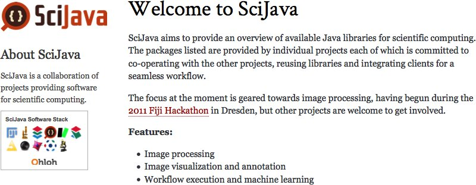
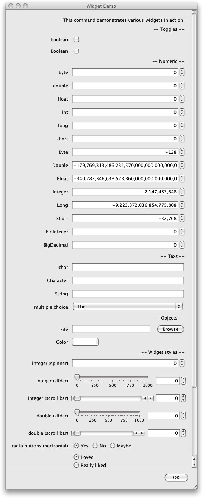
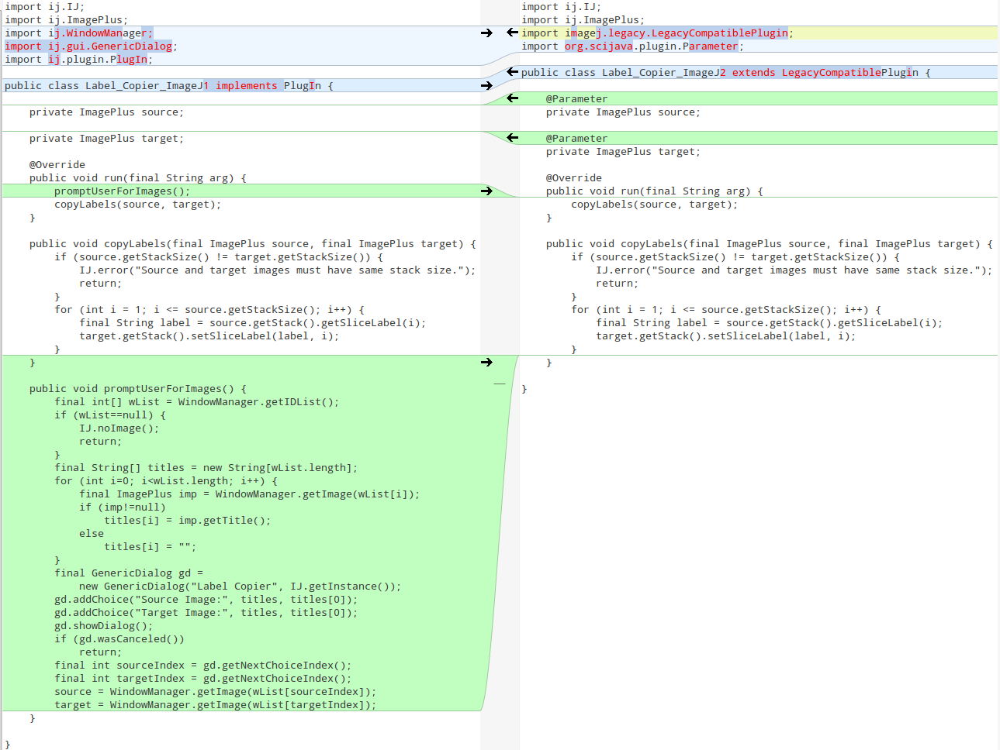

SciJava-common
Plugins, contexts, utilities and more
Curtis Rueden & Johannes Koenig-Schindelin
Prelude: What is SciJava?
http://scijava.org/
Overview
- Extensibility
- Context awareness
- Common utilities
- Extensibility
- Context awareness
- Common utilities
Everybody needs extensions.
... whether they call them extension points, plugins, modules, or toolboxes.
Examples: KNIME nodes, ImageJ 1.x plugins, ImageJ 2 commands, ImageJ 2 user interfaces, ImageJ 2 scripting languages, SCIFIO file formats, TrackMate segmentation algorithms, TrackMate tracking algorithms, Trainable Segmentation feature algorithms, etc
In ImageJ2  , we invented a plugin mechanism to replace ImageJ 1.x
, we invented a plugin mechanism to replace ImageJ 1.x  plugins (called "commands" in ImageJ2 to distinguish from other plugins).
plugins (called "commands" in ImageJ2 to distinguish from other plugins).
SCIFIO -- the same to Bio-Formats
-- the same to Bio-Formats  as ImageJ2 is to ImageJ 1.x -- also needs plugins: file formats!
as ImageJ2 is to ImageJ 1.x -- also needs plugins: file formats!
Solution: factor out plugin discovery from ImageJ2 into a base library...
Habemus SciJava-common  .
.
Example:
@Plugin(type = Command.class)
public class HelloWorld implements Command {
@Override
public void run() {
// ...
}
}
The annotation @Plugin(type = Command.class) is automatically processed at compile time, accumulating an index in META-INF/json/org.scijava.Plugin ... except in Eclipse ... but we have a work-around for that problem...
Plugin types can be any interface extending the marker interface SciJavaPlugin:
public interface HelloPlugin extends SciJavaPlugin {
public void sayHello();
}
@Plugin(type = HelloPlugin.class)
public class HelloKNIME implements HelloPlugin {
@Override
public void sayHello() {
System.out.println("Hello!");
}
}
Plugins can be discovered using the PluginService:
PluginService pluginService;
List<HelloPlugin> plugins =
pluginService.createInstancesOfType(HelloPlugin.class);
for (final HelloPlugin hello : plugins) {
hello.sayHello();
}
- Extensibility
- Context awareness
- Common utilities
In ImageJ2, as well as SCIFIO, we realized the need for a state, a context e.g. to keep track of the currently available plugins.
We also realized the recurrent need for common functionality such as querying available plugins or sending events.
Therefore, the SciJava context is a container of named services that each hold local state information.
Common services: PluginService, EventService, LogService, (ImageJ2 & SCIFIO add their own services: CommandService, UIService, FormatService, ...)
The default constructor will create the SciJava context with all available services:
final Context context = new Context();
final PluginService pluginService = context.getService(PluginService.class);
Services are -- surprise! -- SciJavaPlugins. Just like plugins, there are service interfaces and implementing classes. This allows a proper separation between the service's public contract and the details of its implementation.
Example service interface:
public interface HelloService extends SciJavaService {
public void sayHello();
}
Example implementation:
@Plugin(type = Service.class)
public class DefaultHelloService implements HelloService {
@Parameter
private StatusService status;
@Override
public void initialize() {
// initialize as little as possible here
}
@Override
public void sayHello() {
status.showStatus("Howdy!");
}
}
Separating service interfaces from their default implementation makes it possible to override them easily in 3rd-party components:
@Plugin(type = Service.class, priority = Priority.HIGH_PRIORITY)
public class SilentHelloService implements HelloService {
@Override
public void sayHello() {
// Shhhh!
}
}
- Extensibility
- Context awareness
- Common utilities
Functionality that does not need internal state is provided by static utility functions.
Examples:
- listing directories recursively given as URLs
- get top-level project directory for an application class
- executing external programs
- ...
Current utility classes: AppUtils, ArrayUtils, ClassUtils, ConversionUtils, DebugUtils, FileUtils, ListUtils, MiscUtils, NumberUtils, ProcessUtils, PrimitiveArray
Example usage:
// list all files in the class path entry as org/scijava/Context.class
final URL location = ClassUtils.getLocation(Context.class);
for (final URL url : FileUtils.listContents(location)) {
// ...
}
Bonus track: Plugins & Context in ImageJ2
Anatomy of an ImageJ2 command:
@Plugin(type = Command.class, headless = true,
menuPath = "Help>Hello, World!")
public class HelloWorld implements Command {
@Parameter(label = "What is your name?")
private String name = "J. Doe";
@Parameter(type = ItemIO.OUTPUT)
private String greeting;
@Override
public void run() {
greeting = "Hello, " + name + "!";
}
}
Commands are executed by the CommandService:
@Parameter
private CommandService commands;
...
boolean fillUnsetParameters = true;
commands.run(HelloWorld.class, fillUnsetParameters,
"name", "Bugs Bunny");
Unless populated by the run() method, Parameters are auto-populated by the CommandService (context, services, ...) displaying a dialog to the user if necessary, based on the Parameters' types and annotations.

Dialog elements ("widgets") are SciJava plugins, too ...
ImageJ 1.x plugins vs ImageJ2 commands:
Summary
- SciJava-common is a lean, versatile library
- A powerful plugin mechanism lies at its core
- ImageJ2/SCIFIO make extensive use of SciJava-common
- You can use SciJava-common, too!
Thank you!
ImageJ2 team: